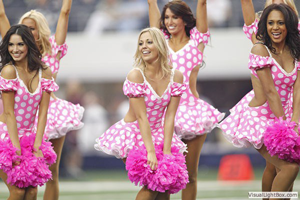
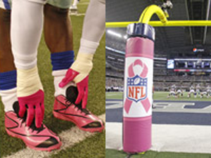
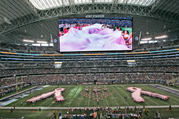
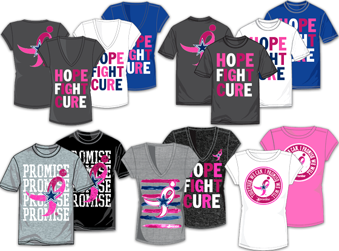

Fullfilling the Promise
Nancy G. Brinker promised her dying sister, Susan G. Komen, she would do everything in her power to end breast cancer forever. In 1982, that promise became Susan G. Komen® and launched the global breast cancer movement. Today, Komen has invested more than $2.5 billion to fulfill our promise, working to end breast cancer in the U.S. and throughout the world through ground-breaking research, community health outreach, advocacy and programs in more than 30 countries.
Dallas Cowboys - iPromise
This football season, the Dallas Cowboys and Susan G. Komen are once again asking fans and supporters to join the promise that launched the breast cancer movement through the “iPromise” campaign. During the team’s 2013 season, the Dallas Cowboys and Susan G. Komen for the Cure® asked fans and supporters to join the campaign known as “iPromise,” promising to HOPE! FIGHT! CURE! to raise awareness for women’s health. Beginning October 6 during the team’s matchup against the Denver Broncos and lasting throughout Breast Cancer Awareness Month, fans were encouraged to HOPE! by getting educated about breast health, FIGHT! by participating with TEAM COWBOYS in the Komen Dallas Race for the Cure® and CURE! by purchasing iPromise merchandise, with 10 percent of its proceeds going towards breast cancer research.
Breast Cancer Awareness Games
Fans visiting Cowboys Stadium will see their favorite blue and silver adorned with a touch of pink at the two home games played during National Breast Cancer Awareness Month this October 6th and 13th where fans and supporters will be asked to have HOPE! continue the FIGHT! and help find a CURE! for breast cancer by getting educated about breast health, participating in events, and making a donation. The October 6th game against the Denver Broncos will also include a halftime show featuring a human running ribbon created by survivors and co-survivors on the field.
Hope!
To raise awareness and promote breast health education, fans coming to AT&T Stadium during the month of October saw their favorite silver and blue adorned with touches of pink – including the uniforms of players, coaches and cheerleaders. Public service announcements aired throughout the game featuring Jones family members and Cowboys players and cheerleaders stressing the importance of early screening and mammograms. Fans also enjoyed a special halftime performance featuring breast cancer survivors and co-survivors forming two giant pink ribbons alongside past and present Dallas Cowboys Cheerleaders.
Fight!
New to the team’s Breast Cancer Awareness campaign, the Cowboys extended an invitation for all fans and supporters to join their race team in the 2013 Komen Dallas Race for the Cure®. Members of TEAM COWBOYS enjoyed a free breakfast at the team’s pre-race rally and participated in the 5K alongside Cowboys mascot Rowdy, members of the Dallas Cowboys Women’s Association, Cowboys staff and others.
Cure!
Endowed by a $1 million donation of marketable assets from the Gene and Jerry Jones family and the Dallas Cowboys, the final goal of the iPromise campaign is to raise funds for breast cancer efforts, most notably through the iPromise co-branded merchandise line. Sold exclusively through Dallas Cowboys Pro Shops, 10 percent of the proceeds of all iPromise merchandise sales goes directly to Susan G. Komen for the Cure® and its efforts to find a cure for breast cancer.
iPromise Merchandise
The Dallas Cowboys Stadium Pro Shop and Shop Cowboys are the official retailers of iPromise merchandise and will donate 5% of all iPromise merchandise sales to Susan G. Komen.
